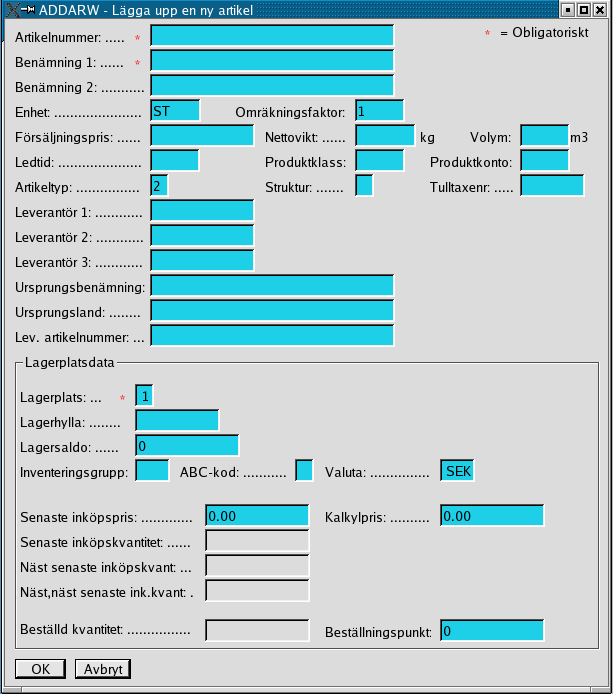
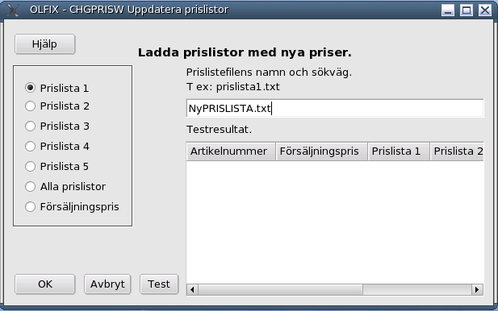
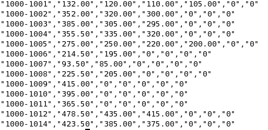

Order/Lager/Fakturering för Linuxsystem
Användarmanual
Kapitel Artiklar
Version 0.43
2005-11-30
This program is free software; you can
redistribute it and/or modify Copyright 2004 Jan Pihlgren.
Lägga upp en ny artikel.
Söka en artikel.
Lägga upp en ny artikel.

Information om en artikel finns på två ställen, dels i ARTIKELREG och dels i LAGERSTELLEREG.
Söka en artikel.
Börja med att välje sökbegrepp genom att klicka på en av knapparna.
Uppdatera priser/prislistor

Skriv in namnet på prisfilen och avsluta med att trycka på TAB-tangenten. Välj därefter vilken prislista du vill uppdatera (default Prislista 1). Prislista 1 - Prislista 5 uppdaterar endast den prislistan. Alla Prislistor uppdaterar alla 5 prislistorna. Försäljningpris uppdaterar försäljningspriset i artikelregistret.
Genom att klicka på knappen Test listas priserna i rutan Testresultat, inget mer händer. Ett klick på knappen Avbryt innebär att programmet avslutas.
Prisfilen.
Prisfilen ska ligga i hemmabiblioteket ($HOME). Programmet letar efter filen i hemmabiblioteket.
Namnet på filen är valfritt. Filens skall vara en så kallad "csv-fil", komma sepparerad.

Varje rad ska innehålla uppgifter (priser) för en artikel. Fälten avskiljs med kommatecken. Varje fälts värde omges av sitationstecken ( " ). Det första fältet ska innehålla artikelnummer, ett artikelnummer som redan finns registrerat.
Till början
Artikeltyp
it under the terms of the GNU General Public License as published by
the Free Software Foundation; either version 2 of the License, or
(at your option) any later version.
Prislistor.
Uppdatera priser/prislistor.
Prisfilen.
ARTIKELREG innehåller grunduppgifter.
LAGERSTELLEREG innehåller kvantitetsuppgifter. Det kan finnas flera lagerställen för en artikel.
Vid nyregistrering av en artikel måste man börja med artikelnummer. Ett Artikelnummer kan bestå av upp till 30 valfria tecken.
Tecknen bör inte innehålla mellanslag/mellanrum eller ej skrivbara tecken. Artikelnummer bör inte innehålla någon form av logik.
Förr eller senare kommer logiken att spricka. Använd hellre produktklass för att sammanföra produkter enligt önskemål.
Benämning används för att kortfattat och begripligt beskriva artikeln/produkten. Benämning kan innehålla upp till 60 tecken.
Benämning 1 är obligatoriskt. Benämning 2 kan användas för kompletterande beskrivning av artikeln.
Fältet Enhet kan innehålla 5 tecken. Lämliga enheter är ST, Liter, Kg, Ton mm mm.
Omräkningsfaktor är avsedd att användas för möjligheten att ange Kg och mena ton, omräkningsfaktor 3. Fältet kan innehålla siffror och bara heltal.
Fälten Nettovikt och Volym är till för att underlätta fraktberäkningar.
Med Ledtid avses tiden det tar att få fram en ny artikel. Antingen tillverkningstid eller den tid det tar från beställning tills artikeln finns hemma på lager.
Ledtiden anges i dagar.
Produktklass anges med upp till 5 tecken, lämpligast med siffror. Produktklassen definieras i tabellen PRODUKTGRUPP där produktklassen beskrivs.
Produktkonto används vid behov/önskemål för ekonomisk redovisning.
Artikeltyp, se begreppsförklaringar.
Struktur, se begreppsförklaringar.
Tulltaxenr enligt tullens förteckning. Behövs vid export av produkter/artiklar.
Leverantör 1 - Leverantör 3 ange leverantörsnummer enligt tabell LEVREG. Används för att underlätta beställning av flera exemplar av artikeln.
Ursprungsbenämning och Ursprungsland används för att hålla reda på en leverantörs artikelnummer samt
ifall en artikel kommer från något annat land än Sverige, vilket behövs vid export.
Lagerplatsdata
Lagerplatsdata innehåller kvantitetsuppgifter som kontinuerligt förändras.
Lagerplats 1 är grundvärde. Har man ingen annan lagerplats så används detta värde. Lagerplats medger 1(ett) tecken).
Lagerhylla kan anges med upp till 10 tecken. Lagerhylla anger var i lagret man förvarar artikeln.
Lagersaldo anger hur mycket av en artikel man har i sitt lager.
Inventeringsgrupp (3 tecken) används för att slippa inventera hela lagret vid ett enda tillfälle. Artiklar som tillhör samma inventeringsgrupp inventeras vid samma tillfälle.
ABC-kod anger, A = 20% mest värdefulla artiklar, C = 20% minst värdefulla artiklarna och B övriga 60%.
Kalkylpris är artikelns kostnad, inköpspris + omkostnader(fraktkostnad, tull, försökring, lagerkostnad mm) .
Beställningspunkt är det lägsta lagersaldo en artikel ska ha så att man hinner fylla på innan lagersaldot blir 0(noll)
Till början

Skriv sedan in på vad sökningen ska göras.
Avsluta med att klicka på Sök.
Utsökningen sker på om angivet ord finns någonstans i sökbegreppet. Hänsyn till versaler eller gemener tas ej.
Ex: ordet linu som finns i Linux.
Genom att klicka på/markera en artikel i listan varvis artikelnumret för den artikeln visas i
sökrutan.
Klicka sedan på Hämta startas DSPARW (Visa artikeldata) med artikelnummer ifyllt.
Sätt fokus på det nya fönstret och tryck Enter och data på vald artikel visas.
Genom att klicka på något av kolumnnamnen får man artiklarna sorterad efter den kolummen,
i stigande eller fallande ordning, beroende på åt vilket håll pilen pekar.
Knappen OK startar och genomför uppdateringen. Knappen Avbryt byter namn till Sluta.
Det minsta antalet fält som får förekomma är 2 st, artikelnummer och ett pris. Inget fält får vara tomt utan ska innehålla ett decimalvärde. OBS! Här används decimalpunkt.
Struktur